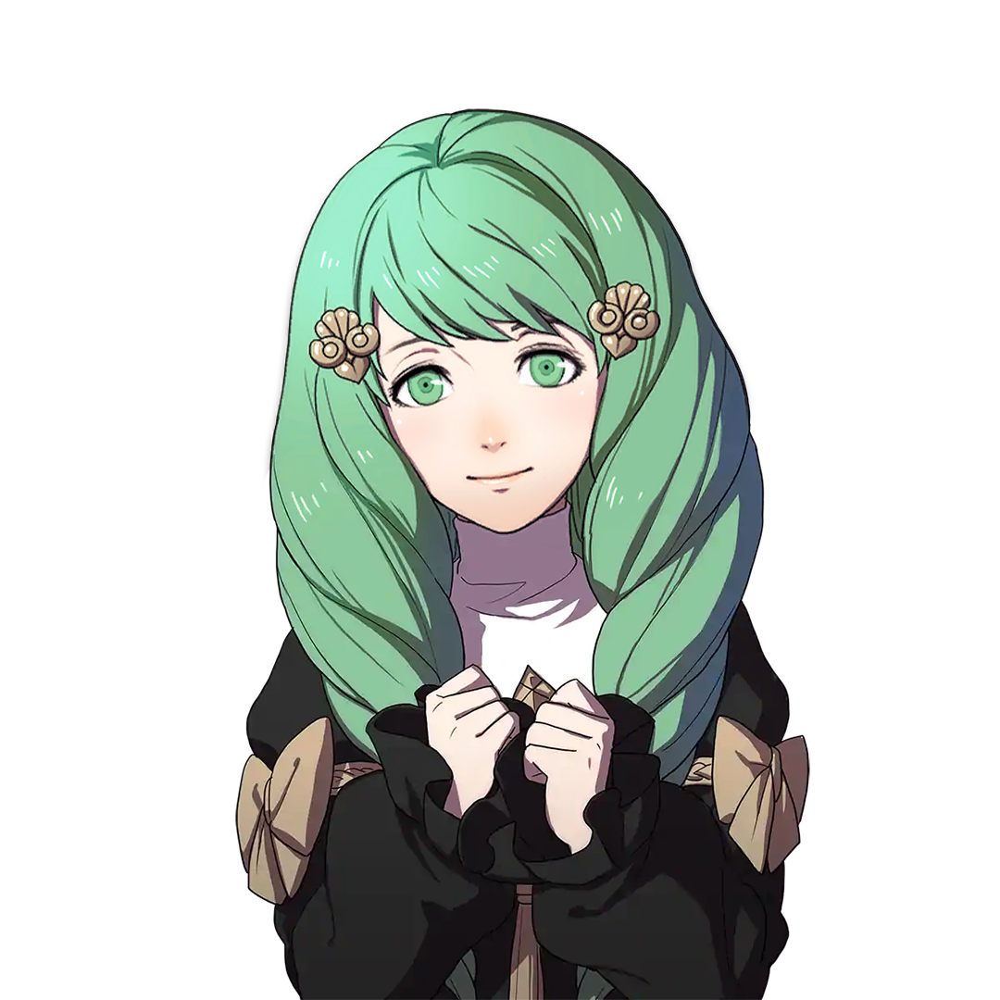

Flayn

Gender: F
Age: ???
Crest: Major Crest of Crest of Cethleann
Height (cm): 151
Nationality: ???
Birthday: ???
Interests: Making Friends, Wandering
Likes: Lively Places, learning new things, making friends, talking about love, forget-me-nots
Dislikes: Seteth's overprotectiveness, Seteth's inordinate meddling, lies, excessive sleeping
Status: Seteth's younger sister